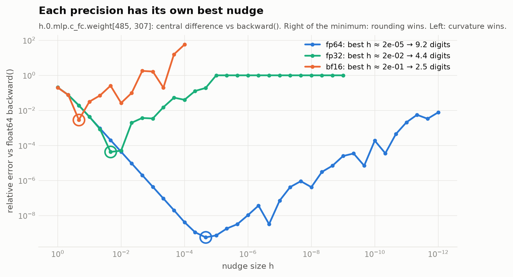
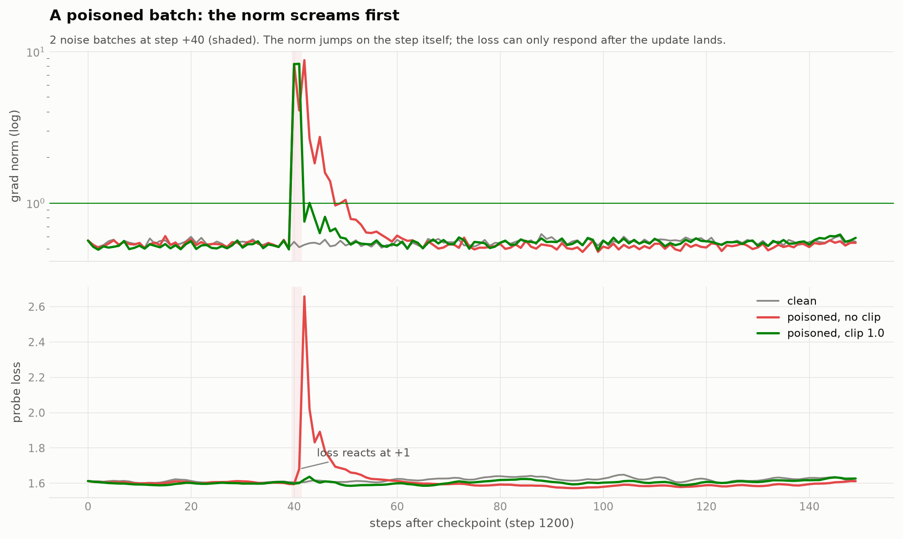

The shape of one step
One real training step at B = 32, T = 256, traced through the forward pass. Each dimension is a chip; hover one and every tensor that carries it lights up. The bar is the element count, so you can see which tensors dominate memory.
What the shapes cost
Training state is the lesson's 16 bytes per weight: fp32 weight, gradient and two AdamW moments. The activations kept for backward in this one step are much larger.
nn.Linear stores (out, in)
The weight shapes read backwards from how they're used: a layer that maps C → 4C stores a (4C, C) matrix and computes x @ W.T. Every gradient and both AdamW buffers have exactly the weight's shape.
One nudge per layer type
In float64 with dropout off, nudge one weight by ±h, measure the change in loss, and compare the slope with what backward() reported. Ten layer types, each at the element with the largest gradient, because a zero gradient agrees trivially and proves nothing. The matching digits are in bold.
| loading… |
“If they do not agree, you have found something worth understanding”
Three failures, planted on purpose. The ratio is backward() ÷ the nudge.
And one I didn't plant: the first check matched only ~6 digits in “float64”. The loss function called logits.float(), which quietly cast the float64 model down to fp32. The gradient check found a precision bug in the code doing the checking.
How small should h be?
Too big and curvature biases the slope; too small and L(w+h) − L(w−h) cancels. Each precision has its own best h. bf16 cannot measure its own gradients.

The average of averages
Micro-batches hold different numbers of real tokens. The correct loss weights every token equally. The bug, which lived in major frameworks until 2024, averages each micro-batch first and then averages those, so a short micro-batch gets the same vote as a long one. Drag the sliders.
Same data, two models
Three loops, byte-identical data, initial weights and RNG, 600 steps in fp32.
Who paid for the bug
Extra validation loss of the broken model, by position in the context.
Why tests never caught it
Gradient cosine to the correct loop as one micro-batch shrinks to ℓ tokens (the other three keep 256).
The norm, at every step
The full 2,500-step run. Top: the pre-clip gradient norm (log scale), measured after un-scaling. Bottom: the probe loss, which scores the current weights on one fixed validation batch before each update. Hover to read any step, drag to zoom, double-click to reset.
One step where the norm moved first
From the step-1200 checkpoint, three continuations see the same clean data. In two of them, steps +40 and +41 are replaced by random noise.

…and when it moves with the loss
The probe loss averaged around every natural grad-norm spike, minus the same window around nearby ordinary steps. ±1 standard error.
The norm moves before the loss when trouble arrives with the data, and with the loss when it is already in the weights. It is never later, and it is much louder.both measured on the same weights at step k
Where the gradient lives
Gradient norm of every layer group across the run (log colour scale). Hover for values.
Choosing the clip from data
The norm's distribution after warmup, on a log scale. A good cap sits just above normal training and far below a poisoned step.
What the GPU really did
MFU = 6 · N · tokens/s ÷ the GPU's dense tensor-core peak. Each rung adds one change to the rung above. The faint extension also counts attention FLOPs, which 6N ignores at T = 256.
Where the milliseconds go
One step of the best eager rung, profiled. Wall time is measured without the profiler attached.
The biggest lever is model size
Same code, 6 layers, eager. Wider matmuls fill the tensor cores.
What costs the distance to 40%
The ceiling is not the datasheet
Matmul throughput as a share of peak, at ideal and at this model's shapes.
Your own MFU
0.1, down to the bits
0.1 in binary is 1.1001 1001 1001… × 2⁻⁴ and never ends. Every format keeps the sign, the exponent −4, and as much of the mantissa as fits, rounded to nearest-even. Derived by hand and checked bit-for-bit against struct, torch.bfloat16 and torch.float8_e4m3fn.
Update swamping
A weight at w₀ receives the same small update over and over. When the update is under half the gap to the next representable number, every add rounds straight back. This is why training keeps an fp32 master copy.
fp16 underflow on real gradients
This model's gradient elements, cast to fp16 at three loss scales. Subnormals keep fewer digits; zeros are lost.
Rounding error is not noise
Adding 0.1 two thousand times. The right answer is 200.
Which one would I train in?
bf16 for compute
fp32's exponent range, so no loss scale and no underflow. Its 2.4 digits are fine for activations and gradients.
fp32 for what accumulates
Master weights and optimizer moments. bf16 cannot add 0.001 to 1.0, and the swamping lab above shows it.
fp8 E4M3 for big matmul inputs only
With per-block scales, on hardware that does it natively. It misses 0.1 by 1.56%; never use it for weights, moments, softmax or the loss.
On this T4 specifically: fp16 + dynamic loss scaling, because Turing has no bf16 tensor cores. The scaler ended the run at 131,072 with 0 back-offs.
Every figure from the notebook
Generated on Modal GPUs (T4 for the whole notebook, A100 for the MFU section). Click any plate to enlarge it.